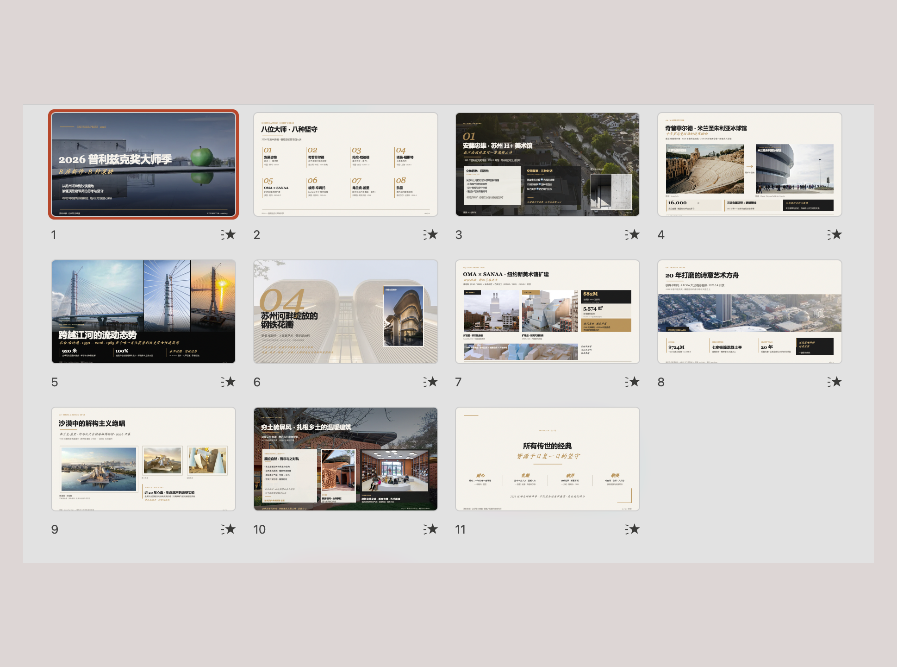
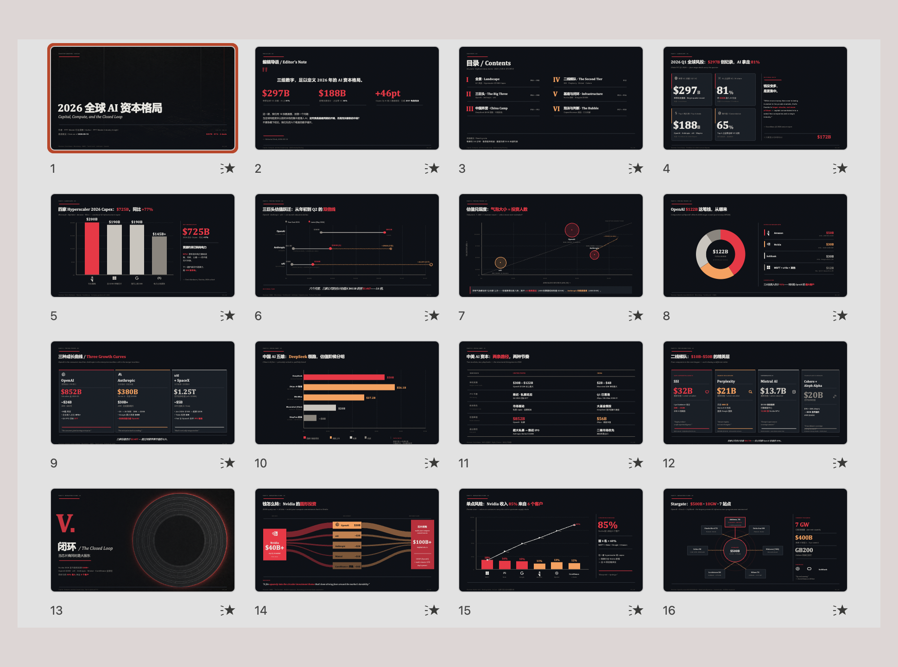
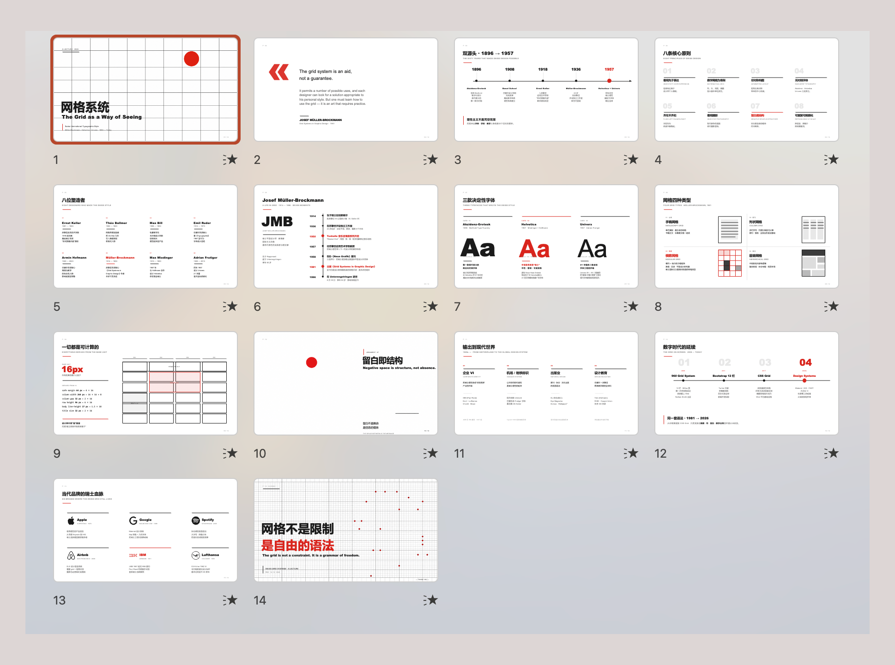
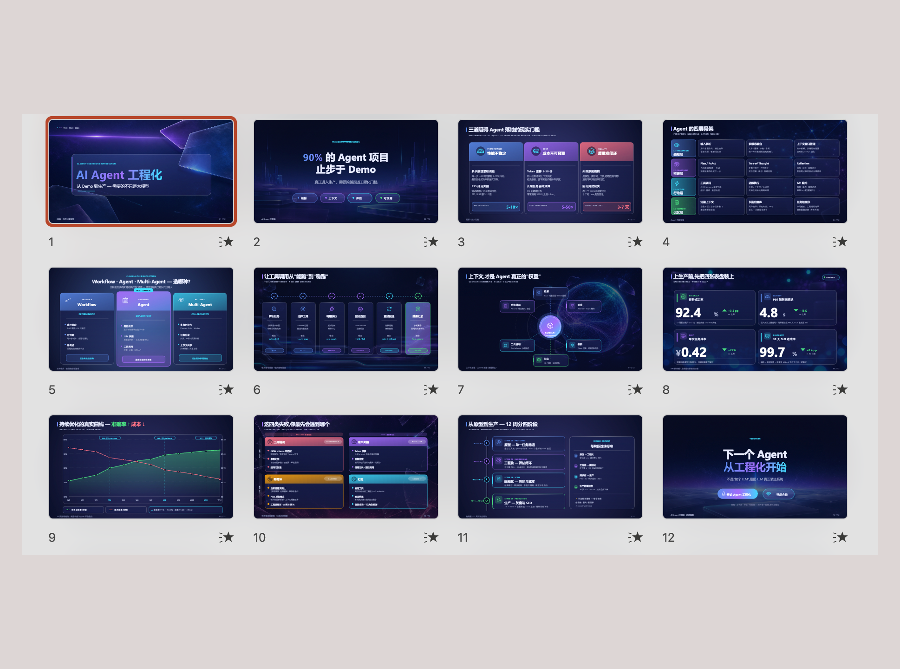
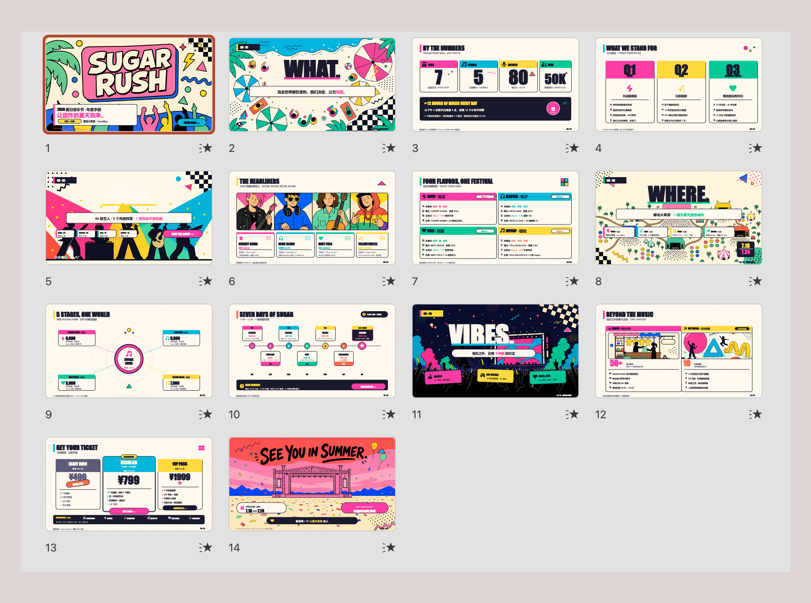
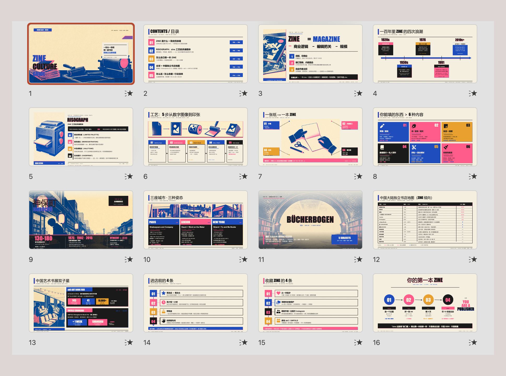

技术分享 · PPT 自动化 · editable deck
PPT Master：把任意文档变成真正可编辑的 PPTX
不是把文字丢给模型吐几张图，而是把文档解析、模板选择、图形生成、旁白、预览和导出串成一条可复用的技术流水线。输出的不是图片，是能继续改的 PowerPoint。
一句话判断：如果你要的是“可编辑的 PPTX”，PPT Master 不是 PPT 生成器的外壳，而是把 文档 → 设计规范 → DrawingML → PPTX 这条链路真正做完整的工具。
01
它解决的不是“做 PPT”，而是“把 PPT 变成可编辑软件产物”
核心价值在于保留 PowerPoint 里的每一个元素。你看到的是 deck，拿到的是 DrawingML 形状、文本框、图表和动画。
核心定位
输入一份文档，输出一份能在 PowerPoint 里逐元素点击、拖拽、修改的 PPTX。
PPT Master 支持 PDF、DOCX、Markdown、URL 和纯文本，既能自由设计，也能套模板，还能把演讲者备注转成逐页旁白。它更像一个“演示文稿工作流引擎”，而不是单一的生成器。
Workflow
文档输入 → 解析结构 → 设计规范 → SVG 生成 → DrawingML 导出 → PPTX
模板复用套现成 deck 的版式
自由设计不依赖固定模板
实时预览边看边改
旁白转音频备注变逐页语音
声音复刻可用自己的音色
输出可编辑不是图片 PPT
Claude Code
Cursor / Copilot
本地运行
可视化修订
02
为什么它值得看：四种“AI 做 PPT”里，它只做最后一种
README 里把路线分得很清楚，PPT Master 选择的是“原生可编辑”这一档。
| 类别 |
输出 |
PowerPoint 里能不能逐元素编辑 |
| 模板填充 |
把内容写回现成 `.pptx` |
部分可以，受限于模板 |
| 图片式输出 |
每页一张大图，塞进 PPTX |
不能，整页是图片 |
| HTML 演示 |
网页幻灯片 |
不能，这不是 PPTX |
| 原生可编辑 |
DrawingML 形状、文本框、图表 |
可以，元素级编辑 |
技术判断
这个项目的技术价值，不是“像不像 PPT”，而是“PPT 的原子结构有没有被保住”。如果元素最终能在 PowerPoint 里被直接选中和修改，说明它做对了。
03
能力清单：输入、预览、动画、旁白、复刻音色，一条链路打通
这不是单点生图，而是围绕“可编辑演示文稿”的完整工具集。
输入层
- PDF
- DOCX
- Markdown
- URL
- 纯文本
输出层
- 真正可编辑的 `.pptx`
- 页间转场
- 页内入场动画
- 演讲者备注转音频
- 可导出带旁白视频
模板工作流
- 自由设计，不依赖模板时，直接根据内容生成。
- 套模板，让已有 deck 保持品牌和版式。
- create-template，把现成 `.pptx` 复刻成可复用资产包，再重建新 deck。
预览与修订
- 生成时自动打开浏览器预览。
- 可以直接拖拽改字、改颜色、调位置。
- 也可以写注解交给 AI 继续修改。
04
工作流拆解：从源材料到可演示 deck，怎么走
把它当成一条可控的生成流水线，而不是“丢进去等奇迹”。
1
准备源材料
把 PDF、文章、Markdown、网页或纯文本放入项目目录，必要时提供模板路径。
2
选择模式
自由设计适合新内容，套模板适合品牌复用，create-template 适合把现成 PPT 复刻成资产包。
3
生成与预览
AI 自动排版、配图、生成 SVG，并在浏览器里实时预览。
4
修订与导出
根据预览做人工修订或让 AI 迭代，最后导出可直接打开编辑的 `.pptx`。
快速上手命令感
你：用 projects/q3-report/sources/report.pdf 做一份 PPT
你：把这份内容做成 PPT
你：给这个 PPT 生成音频，并把音频嵌回去
05
适合谁用，谁又不该指望它一键出完美成品
README 的态度很明确，这是工具，不是许愿池。
更适合的人
- 咨询、研究、分析、培训类文档转汇报
- 需要保留后续编辑空间的人
- 会在意模板、版式和品牌一致性的人
- 愿意在 AI 生成后做最后一轮打磨的人
不该抱的预期
- 不要期待一次就完美到可直接交付
- 便宜模型的上限会更明显
- 如果你不懂 PowerPoint，工具也救不了流程细节
- 它解决的是重复劳动，不是替你做审美决策
06
第三方信号：已经有人把它当成实战工具在写教程
社区教程、部署笔记和版本更新说明，说明这个项目不是“概念演示”，而是可持续迭代的工具链。
社区热度
外部文章普遍把它视为“把任意文档变成可编辑 PPT”的代表项目，且有多篇部署教程和流程拆解文章在跟进。
版本信号
仓库当前显示版本为 v2.11.0。release 记录里可以看到模板、图表、旁白等能力持续在做迭代，而不是停在一个 demo 状态。
07
示例画廊：这套工具输出的不是单一风格，而是一组可切换的演示语言
从杂志、数据新闻、瑞士网格到玻璃态和孟菲斯风，说明它输出的是结构化 deck，不是固定模板图。

Editorial Magazine
偏杂志排版，适合研究稿、建筑、长文综述。

Data Journalism
偏数据新闻，适合讲趋势、图表和结论。

Swiss Grid
严格网格，适合技术汇报、规整型内容。

Glassmorphism SaaS
偏产品感，适合工具、平台、AI 工作台。

Memphis Pop
更活泼，适合活动、营销、年轻化主题。

Risograph Zine
适合做成书、手册、内容集锦。
08
技术栈与使用环境
它面向的是“带 agent 的编辑器”，而不是纯命令行脚本。
推荐使用方式
- Claude Code
- Cursor
- VS Code + Copilot
- CLI Agent
模型建议
- Claude 适合高质量产出
- GPT、Gemini、Kimi 也能跑
- 更强模型更容易出漂亮 deck
- 旁白和配图链路依赖相应 API 能力
我对它的技术判断
PPT Master 最有价值的地方，是把“演示文稿生成”从一次性创作，变成了一个可复用工作流。你可以在这上面继续做模板、旁白、可视化修订、团队规范和品牌沉淀。